1 エクセルの基礎
1.1 作業環境の構築
大学のパソコンはシャットダウンするたびに初期化されるため、作業（分析）したファイルは初期化されない場所に保存する必要があります。
拓殖大学では「Kドライブ」と呼ばれるドライブ（保存領域）が、各学生に割り当てられています。シャットダウンしても初期化されることはなく、大学内のどのパソコンからでもアクセスすることができます。
本授業では、この「Kドライブ」に作業（分析）記録を残します。
デスクトップ左上のPCから、Kドライブを開きます。

以下のように、フォルダのアドレスが（K:）となっいてることを確認してください。

Kドライブを開いている状態で、「新規作成」から「フォルダ」を選び、新規フォルダを作成します。
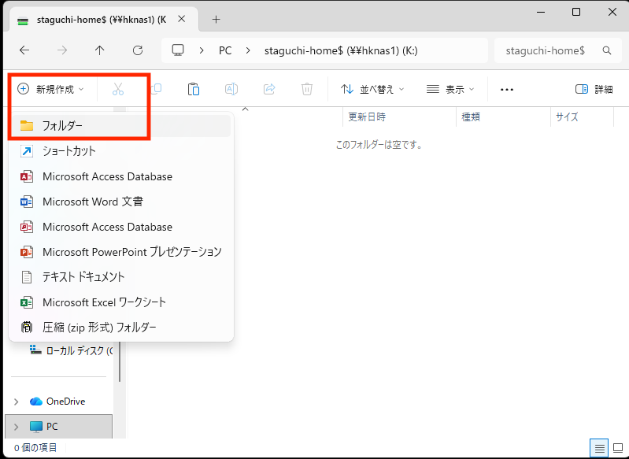
作成したフォルダの名前を「政経データ分析」に変更します。
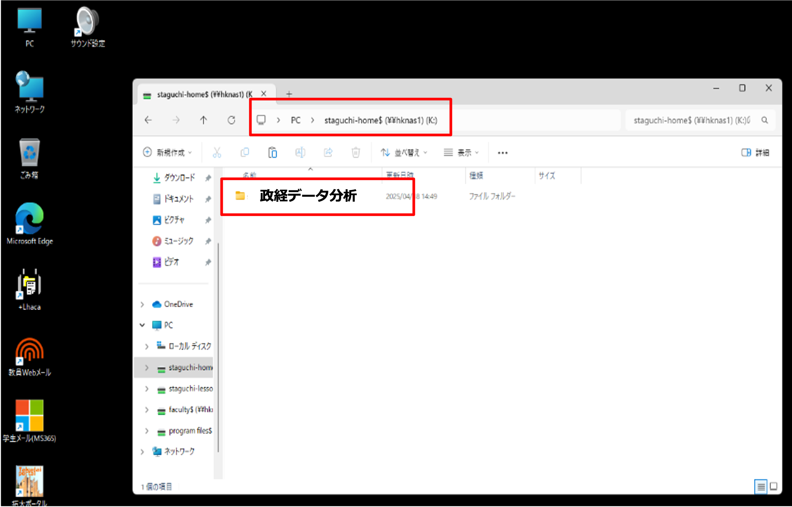
今後は、この「政経データ分析」フォルダの中に本授業で使うファイルやデータを保存します。
1.2 Excel とは
- Excel は表計算と呼ばれるアプリケーションの 1 つです。すごく簡単にいうと表を作って、その表をもとに計算をしたり、グラフを作ったりするための基本ソフトです。
- 表計算なので一番得意なことは「計算」です。簡単な足し算や引き算から高度な計算まで利用することができます。
- 例えば、見積書や請求書、売上報告書など、計算をする必要のある書類に使われるので、就職した後、オフィスワークや事務の仕事をすると、間違いなく使用することになります。
- また、計算だけでなく、日付や数字を使いデータを管理したい時にもよく使われます。
1.3 Excel の起動
画面左下のウィンドウズマークを押して Excel を起動し、空白のブックを選びます。
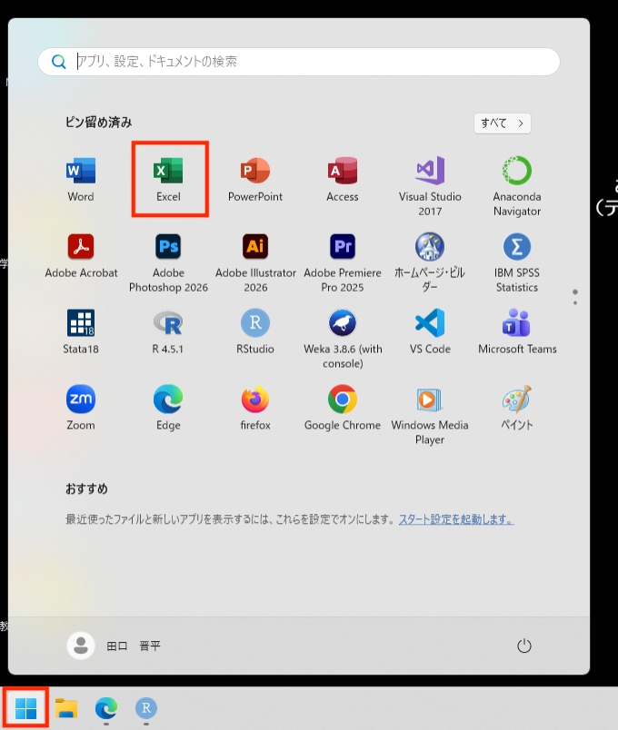
1.4 作業の保存
Excelを開いたら、作業を開始する前に必ずファイルを保存しておきましょう。
パソコン室のデスクトップはログアウトすると全て初期化され、作業したファイルが残りません。また、作業途中で何らかの不具合から Excel が突然シャットダウンしてしまうこと多々あります。必ず先ほど作った K ドライブの「政経データ分析」フォルダの中に保存をしてから作業を開始し、作業の途中には、頻繁に「上書き保存」するようにしましょう。
- ファイル
- 名前を付けて保存
- Kドライブの「政経データ分析」フォルダを選択
- ファイル名を入力
- ファイル名の記入例： 練習1_田口
上書き保存の方法
- ファイル → 上書き保存
- 「Ctrl + s」で上書き保存
- 左上のディスクマークをクリックすることでも上書き保存
- 毎年、必ず何人かは「作業したのですが、保存していませんでした」という学生が現れます、、、。そのような場合でも、課題の提出期限等を考慮することはできません。必ず、保存をしながら作業を進めてください。
1.5 Excel の画面
- 列と行から一つに決まる部屋を「セル」と呼びます。
- F列の5行目は、F5と記載されます。
- A、B、C・・・をクリックすると、列全体が選択できます。
- 1、2、3・・・をクリックすると、行全体が選択できます。
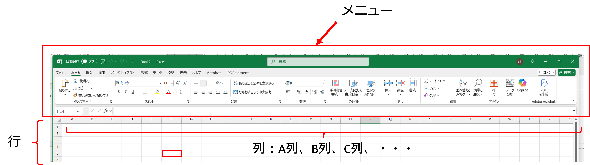
1.6 データの入力
- 入力したいセルをクリックして選択
- キーボードから入力
- Enter で確定
- 下のセルが自動的に選択される
連続入力
エクセルには便利にデータを入力するための補助機能が多く設けられています。
- セルの右下＋Ctrl を押しながらドラッグします。
- 1, 2, 3 と連続している場合には、Ctrl を押さなくても右下をドラッグすることで連続値が入力できます。
- 間隔のある数字や、曜日などの文字列でも連続値を入力できます。
- 連続入力する際に参照するセルを固定する場合には「$」をつけます。
入力値の種類
エクセルでは、入力された値（セル）ごとに、データ（数字）の形式が定められています。画面に表示されている内容と実際にエクセルが情報として持っている内容は違う場合があります。
例えば、エクセルはデータとして 3.14159265 を保持していたとしても、実際に表示されているのは 3.1 だけであったり、日付としてエクセルがデータを保持している場合には、2026年4月13日、2026/4/13 といったように、様々な形で表示させることが出来ます。
セル上で右クリック → セルの書式設定 → 表示形式
標準、数値、通貨、会計、日付・・・
計算する
セルに「1+1」（半角）、「１＋１」（全角）と入力しても計算されません。これはエクセルが入力された数式を、文章（文字）として認識しているからです。
エクセルに計算を実行させるにはセルの最初に「＝」を入力し、続く入力が数式であることを認識させます。
また、関数を入力することで、自動で計算がさせることもできます。
- SUM 関数を使い、セルの値を合計する。
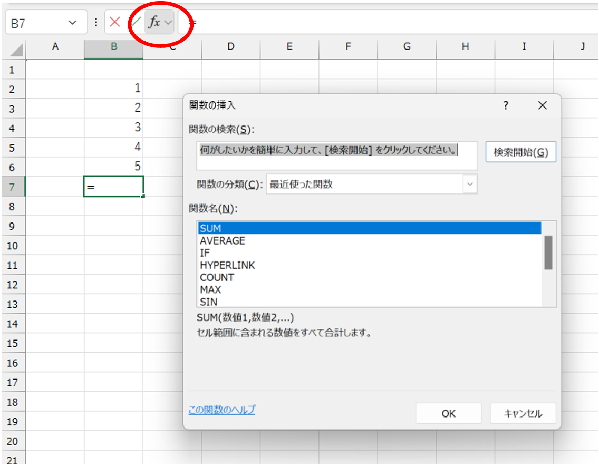
- 頻繁に使われる関数にはアイコンが用意されています。
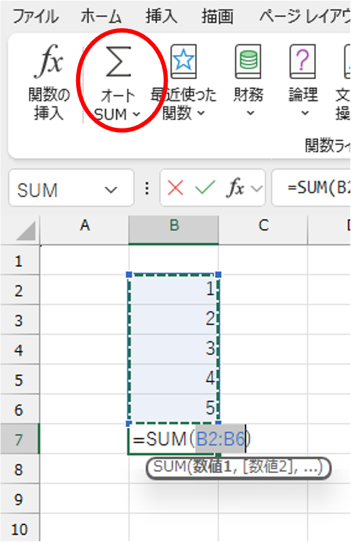
以下の表を作成してみましょう。
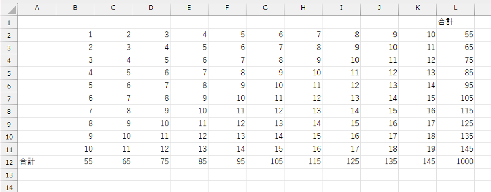
1.7 データ（セル）のコピー
セルをコピーする際、そのコピー内容を指定することができます。
- コピーしたいセルを選択し右クリック → コピー → コピーしたい箇所が点滅する。
- コピーしたい先にカーソルを合わせ右クリック → 形式を選択し貼り付け
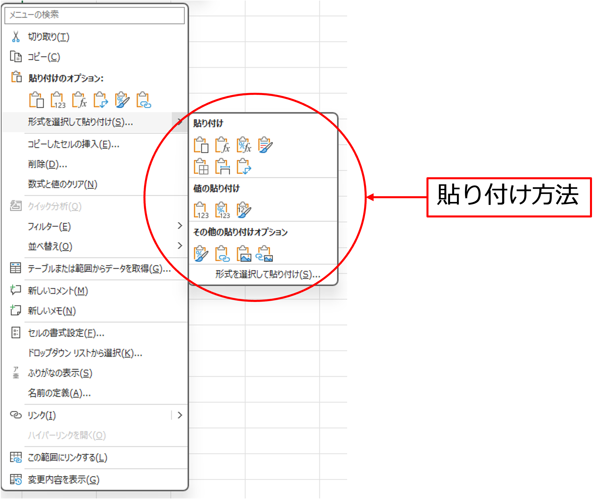
1.8 行・列の挿入
- 行の挿入
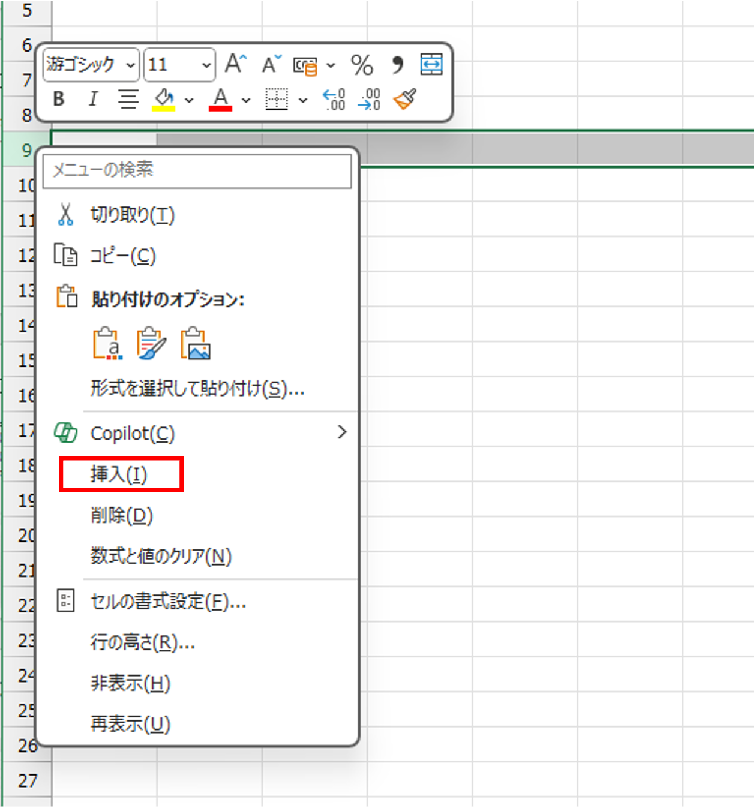
- 列の挿入
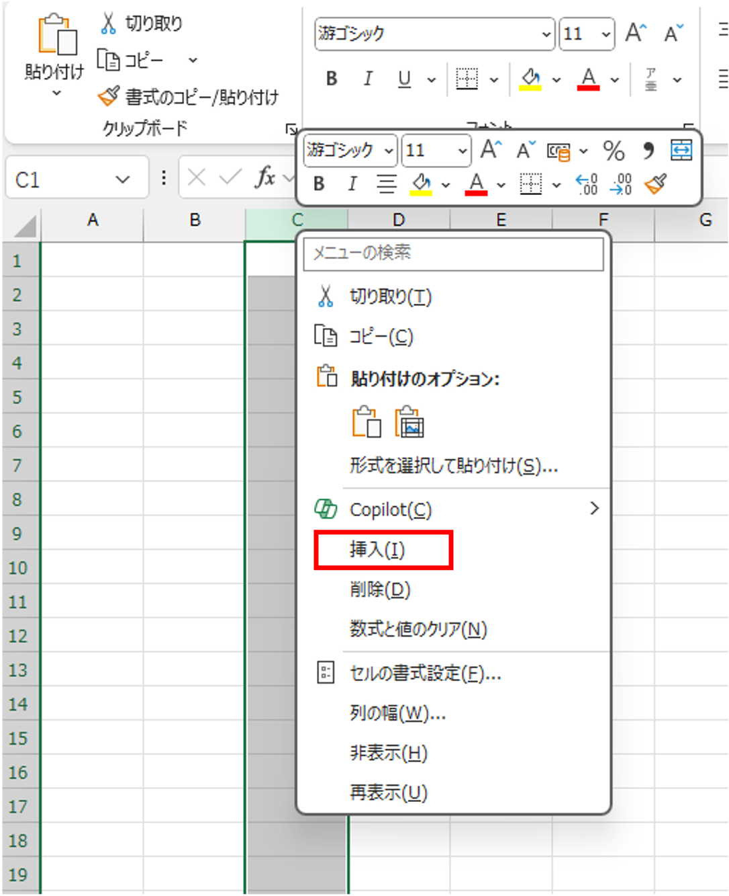
1.9 見た目を整える
セルの書式設定を使い、様々に見た目を整えることができます。
罫線
- 罫線を引きたい範囲を選択し、メニューから選択
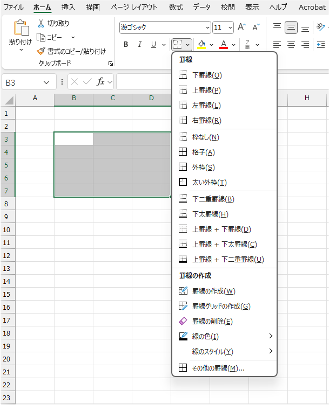
- 右クリック → 書式設定
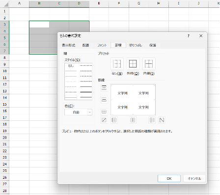
セルの色・フォント
- 範囲を選択し、メニューから選択
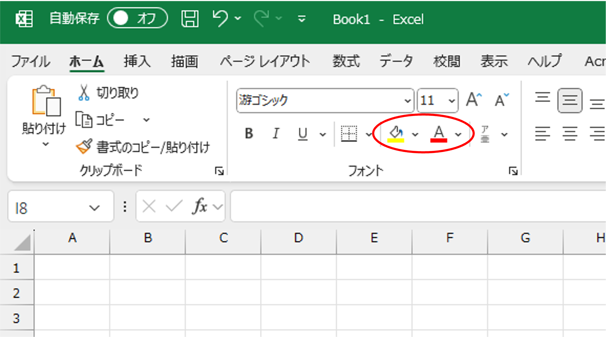
- 右クリック → 書式設定
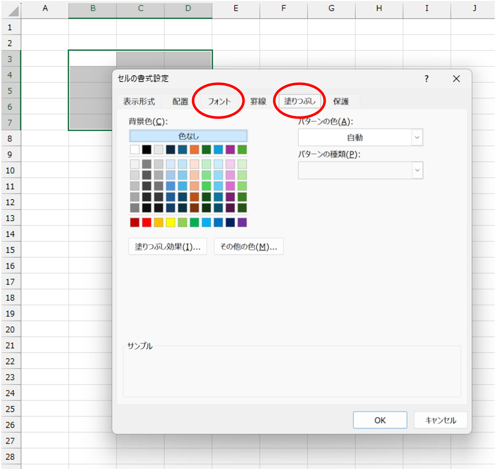
折り返して表示
- 右クリック → 書式設定 → 配置 → 折り返して全体を表示する
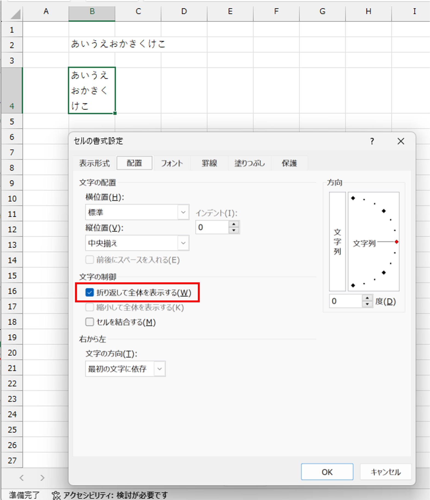
セルの結合
- 範囲を選択し、メニューから選択
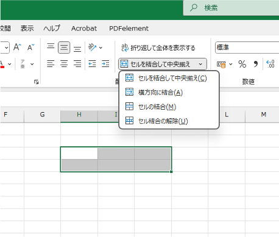
- 右クリック → 書式設定
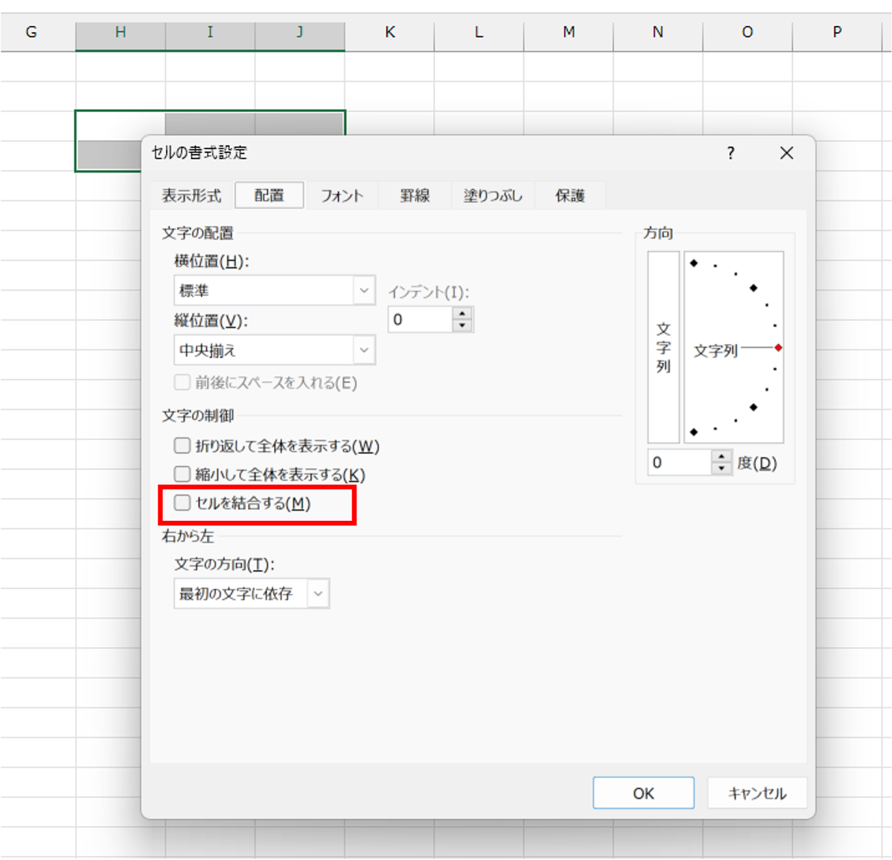
条件付き書式
ある特定の条件に基づき、セルの書式（色や線など）を自動で設定することもできます。データを基に書式を自動で変える機能です。
例：平均より高いところを強調する
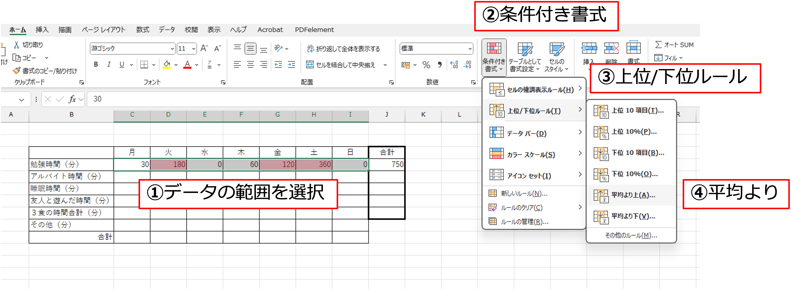
1.10 タブ
エクセルファイルの中はシートごとに管理されています。これらのシートは画面下のタブで管理されています。
- 新規タブの挿入
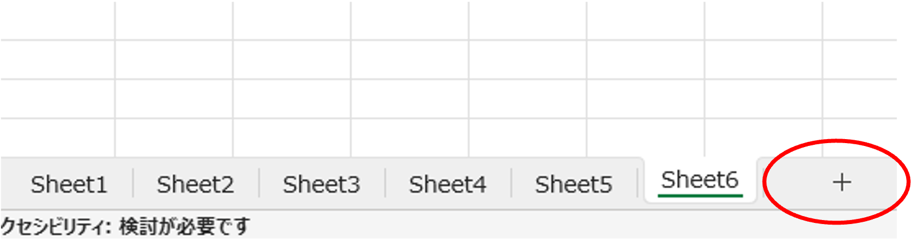
タブ名の変更
タブ名の上で右クリック
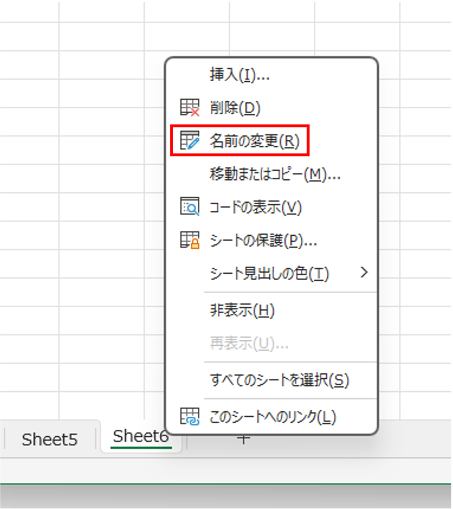
1.11 ファイルのダウンロード
Blackboard からファイルをダウンロードすると、多くの場合、ファイルは「ダウンロード」フォルダに格納されています。そこから K ドライブの「政経データ分析」フォルダにファイルを移動し、名前を変更してから作業を開始します。
1.12 本日の課題
- ファイル「A1_課題」を Blackboard からダウンロードする。
- 本日の課題に取り組む。
- Blackboard から提出する。